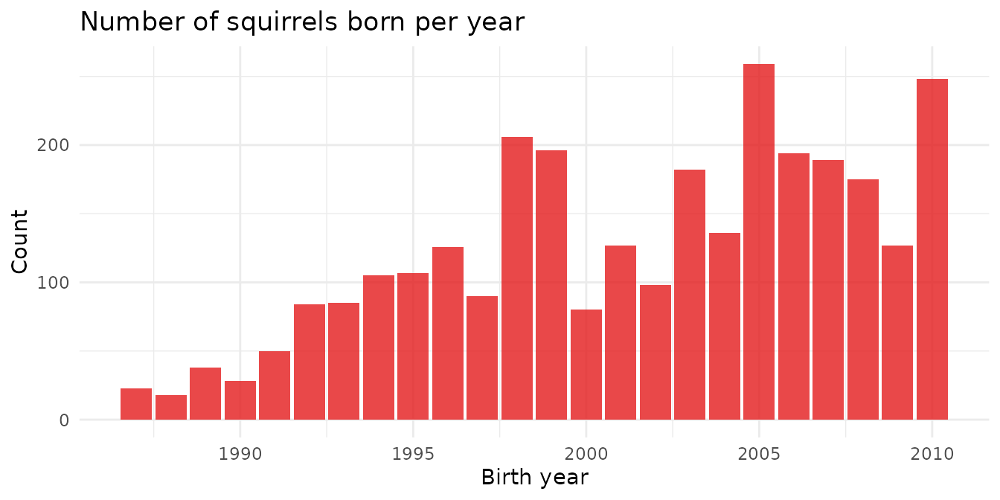
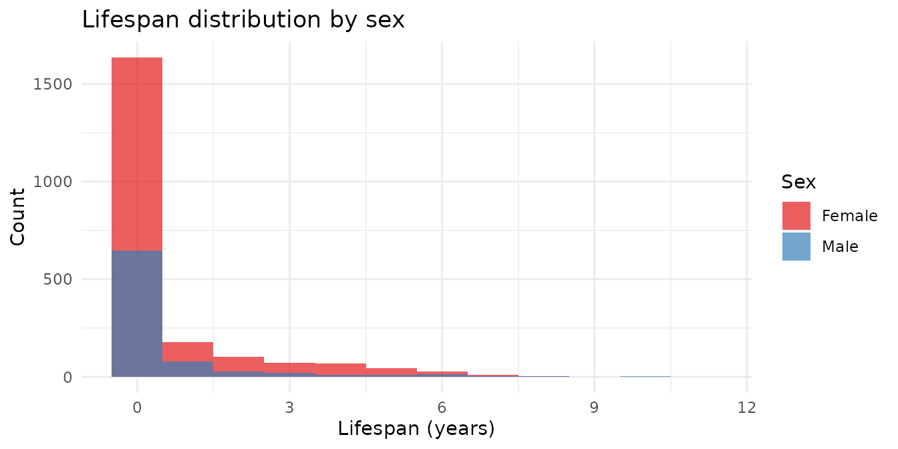
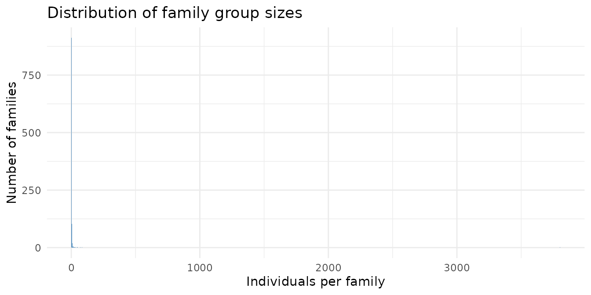
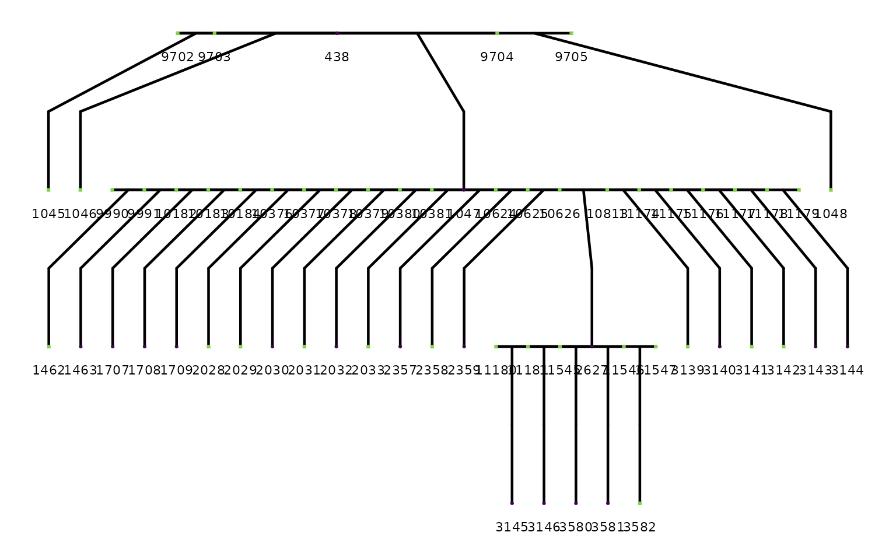
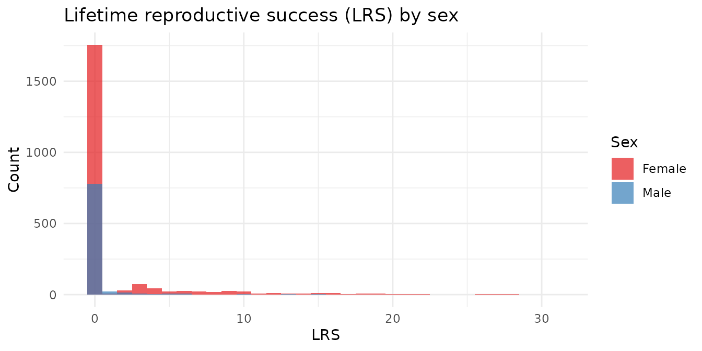
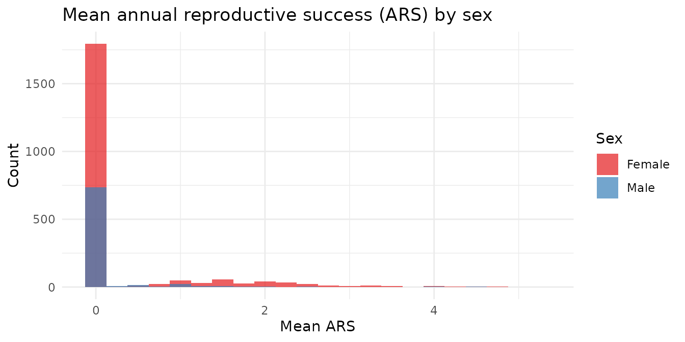
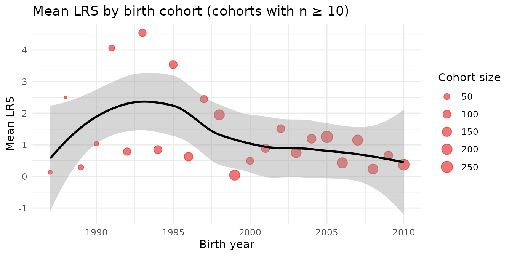

The red_squirrels dataset comes from the Kluane
Red Squirrel Project, a long-term field study of North American
red squirrels (Tamiasciurus hudsonicus) in the boreal forests
of Yukon, Canada, running continuously since 1987. Every squirrel in the
population is individually marked, and its parentage, birth year, death
year, and reproductive output are recorded across its lifetime.
The result is one of the most complete wild-animal pedigrees ever assembled: 7799 individuals spanning over three decades, with fitness measures for most of them.
library(pedigreedata)
library(ggplot2)
library(dplyr)
library(quadprog)
library(ggpedigree)
library(BGmisc)
data(red_squirrels)
head(red_squirrels)
#> # A tibble: 6 × 16
#> personID momID dadID sex famID byear dyear lrs ars_mean ars_max ars_med
#> <dbl> <int> <int> <chr> <dbl> <int> <dbl> <int> <dbl> <dbl> <dbl>
#> 1 1 NA NA F 1 NA NA NA NA NA NA
#> 2 2 NA NA F 2 NA NA NA NA NA NA
#> 3 3 NA NA F 3 NA NA NA NA NA NA
#> 4 4 NA NA F 4 NA NA NA NA NA NA
#> 5 5 NA NA F 5 NA NA NA NA NA NA
#> 6 6 NA NA F 6 NA NA NA NA NA NA
#> # ℹ 5 more variables: ars_min <dbl>, ars_sd <dbl>, ars_n <dbl>,
#> # year_first <dbl>, year_last <dbl>The project began marking squirrels in 1987. Birth year coverage shows how the monitored population grew — and which years had the most recruits.
red_squirrels |>
filter(!is.na(byear)) |>
count(byear) |>
ggplot(aes(x = byear, y = n)) +
geom_col(fill = "#E41A1C", alpha = 0.8) +
labs(
title = "Number of squirrels born per year",
x = "Birth year", y = "Count"
) +
theme_minimal()
The spikes in some years reflect the boreal forest’s mast cycle — periodic high cone production that triggers a population boom in red squirrels (a phenomenon called the “Chitty effect” in this system).
For individuals with both birth and death years recorded, we can look at the distribution of lifespans.
red_squirrels |>
filter(!is.na(byear), !is.na(dyear)) |>
mutate(lifespan = dyear - byear) |>
filter(lifespan >= 0) |>
ggplot(aes(x = lifespan, fill = sex)) +
geom_histogram(binwidth = 1, alpha = 0.7, position = "identity") +
scale_fill_brewer(
palette = "Set1",
labels = c("F" = "Female", "M" = "Male")
) +
labs(
title = "Lifespan distribution by sex",
x = "Lifespan (years)", y = "Count", fill = "Sex"
) +
theme_minimal()
red_squirrels |>
filter(!is.na(byear), !is.na(dyear), !is.na(sex)) |>
mutate(lifespan = dyear - byear) |>
filter(lifespan >= 0) |>
group_by(Sex = sex) |>
summarise(
n = n(),
mean_years = round(mean(lifespan), 2),
max_years = max(lifespan)
)
#> # A tibble: 2 × 4
#> Sex n mean_years max_years
#> <chr> <int> <dbl> <dbl>
#> 1 F 2142 0.64 11
#> 2 M 824 0.59 10
cat("Total individuals: ", nrow(red_squirrels), "\n")
#> Total individuals: 7799
cat(
"Founders: ",
sum(is.na(red_squirrels$momID) & is.na(red_squirrels$dadID)), "\n"
)
#> Founders: 1578
cat(
"With both parents: ",
sum(!is.na(red_squirrels$momID) & !is.na(red_squirrels$dadID)), "\n"
)
#> With both parents: 1802
cat("Number of families: ", n_distinct(red_squirrels$famID), "\n")
#> Number of families: 1100The dataset includes 1100 distinct family groups. Most are small (wild territorial animals rarely aggregate), but a subset of well-connected lineages spans multiple generations.
red_squirrels |>
count(famID) |>
ggplot(aes(x = n)) +
geom_histogram(binwidth = 2, fill = "#377EB8", alpha = 0.8) +
labs(
title = "Distribution of family group sizes",
x = "Individuals per family", y = "Number of families"
) +
theme_minimal()
Before plotting, we validate the pedigree structure.
checkSex() standardizes sex coding;
checkParentIDs() adds phantom placeholders for parents with
no row of their own; checkPedigreeNetwork() confirms there
are no impossible ancestry loops.
sq <- checkSex(red_squirrels,
code_male = "M",
code_female = "F",
verbose = TRUE,
repair = TRUE
)
#> Role: dadID
#> 1 unique sex codes found: M
#> Modal sex code: M
#> All parents consistently coded.
#> Role: momID
#> 1 unique sex codes found: F
#> Modal sex code: F
#> All parents consistently coded.
#> Changes Made:
sq <- checkParentIDs(sq,
addphantoms = TRUE,
repair = TRUE,
parentswithoutrow = FALSE,
repairsex = FALSE
)
#> REPAIR IN EARLY ALPHA
net <- checkPedigreeNetwork(sq,
personID = "ID",
momID = "momID",
dadID = "dadID",
verbose = TRUE
)
cat("Pedigree is acyclic:", net$is_acyclic, "\n")
#> Pedigree is acyclic: TRUE
library(ggpedigree)
# Pick a mid-sized family with known parentage for a clean plot
fam_summary <- sq |>
filter(!is.na(momID) | !is.na(dadID)) |>
count(famID) |>
filter(n >= 15, n <= 30) |>
arrange(desc(n))
focal_fam <- sq |> filter(famID == fam_summary$famID[1])
ggPedigree(focal_fam,
personID = "ID",
momID = "momID",
dadID = "dadID",
config = list(
add_phantoms = TRUE,
code_male = "M",
code_female = "F"
)
)
#> REPAIR IN EARLY ALPHA
LRS is the total number of offspring an individual produced that survived to independence across its entire life — the closest field equivalent of Darwinian fitness.
red_squirrels |>
filter(!is.na(lrs), !is.na(sex)) |>
ggplot(aes(x = lrs, fill = sex)) +
geom_histogram(binwidth = 1, alpha = 0.7, position = "identity") +
scale_fill_brewer(
palette = "Set1",
labels = c("F" = "Female", "M" = "Male")
) +
labs(
title = "Lifetime reproductive success (LRS) by sex",
x = "LRS", y = "Count", fill = "Sex"
) +
theme_minimal()
red_squirrels |>
filter(!is.na(lrs), !is.na(sex)) |>
group_by(Sex = sex) |>
summarise(
n = n(),
mean_lrs = round(mean(lrs), 2),
median = median(lrs),
max_lrs = max(lrs),
prop_zero = round(mean(lrs == 0), 2)
)
#> # A tibble: 2 × 6
#> Sex n mean_lrs median max_lrs prop_zero
#> <chr> <int> <dbl> <dbl> <int> <dbl>
#> 1 F 2133 1.41 0 31 0.82
#> 2 M 848 0.34 0 17 0.92The right skew is a universal feature of fitness distributions: most individuals produce few or no recruits, while a small number are extraordinarily productive. Notice that a large proportion have LRS = 0.
ARS captures productivity in a single year, averaged across all years the individual was observed. It is less sensitive to lifespan differences than LRS.
red_squirrels |>
filter(!is.na(ars_mean), !is.na(sex)) |>
ggplot(aes(x = ars_mean, fill = sex)) +
geom_histogram(binwidth = 0.25, alpha = 0.7, position = "identity") +
scale_fill_brewer(
palette = "Set1",
labels = c("F" = "Female", "M" = "Male")
) +
labs(
title = "Mean annual reproductive success (ARS) by sex",
x = "Mean ARS", y = "Count", fill = "Sex"
) +
theme_minimal()
Population-level fitness can vary with environmental conditions. Here we look at mean LRS by birth cohort.
red_squirrels |>
filter(!is.na(byear), !is.na(lrs)) |>
group_by(byear) |>
summarise(mean_lrs = mean(lrs), n = n()) |>
filter(n >= 10) |>
ggplot(aes(x = byear, y = mean_lrs)) +
geom_point(aes(size = n), alpha = 0.6, color = "#E41A1C") +
geom_smooth(method = "loess", se = TRUE, color = "black") +
scale_size_continuous(range = c(1, 5)) +
labs(
title = "Mean LRS by birth cohort (cohorts with n ≥ 10)",
x = "Birth year", y = "Mean LRS", size = "Cohort size"
) +
theme_minimal()
Variation in mean LRS across birth cohorts reflects the boom-bust dynamics of this population, driven by the mast cycle and other environmental factors.
Not all individuals have complete records — founders by definition lack parent IDs, and not all individuals have fitness data.
data.frame(
Variable = c("momID", "dadID", "byear", "dyear", "lrs", "ars_mean"),
Missing = sapply(
red_squirrels[c("momID", "dadID", "byear", "dyear", "lrs", "ars_mean")],
function(x) {
paste0(
sum(is.na(x)), " (",
round(mean(is.na(x)) * 100, 1), "%)"
)
}
)
)
#> Variable Missing
#> momID momID 1603 (20.6%)
#> dadID dadID 5972 (76.6%)
#> byear byear 4828 (61.9%)
#> dyear dyear 4833 (62%)
#> lrs lrs 4818 (61.8%)
#> ars_mean ars_mean 4828 (61.9%)McFarlane, S.E., Boutin, S., Humphries, M.M., et al. (2015). Very low levels of direct additive genetic variance in fitness and fitness components in a red squirrel population. Dryad. https://doi.org/10.5061/dryad.n5q05